My work spans short films, photography, performance coverage, and generative filmmaking experiments. I bring a collaborative approach to developing stories and guiding creative work from an idea through production and finishing.
That work has won Best Trailer at the 48 Hour Film Project in Los Angeles and Best Movie Poster at Night of Shorts in Milano, with an honorable mention at Indie Short Fest and two nominations in Toronto. The photographs have hung at the San Diego County Fair, and my recreation of a frame from Pearl won Best Costume Design at the ShotDeck Recreations Contest 2024.
Film
Open a frame to watch the trailer. Full films are shared by email.
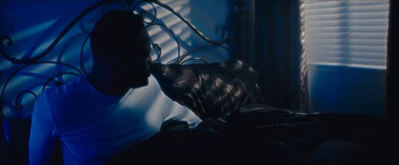
Coulrophobia
2024 Short film 48 Hour Film Project, Los Angeles
9 festivals, 2 wins
Trailer 0:54
- 48 Hour Film Project Los Angeles 2024, Best of the Fest: WON Best Trailer
- San Diego International Film Festival 2025, Official Selection
- Indie Short Fest 2025, Official Selection, Honorable Mention for Best Horror Short and Best Sound Design
- San Diego Film Week 2025, Official Selection
- Night of Shorts 2025, Milano, WON Best Movie Poster
- Red Movie Awards 2025, Reims, Official Selection
- Los Angeles Lift-Off Film Festival, Official Selection
- Highlands Horror Film Fest, Official Selection
- Toronto International Nollywood Film Festival 2025, Official Selection
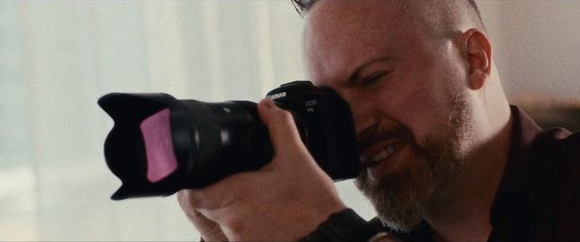
Echoes of Vengeance
Producer
2024 Short film 48 Hour Film Project, Los Angeles
2 festivals, 2 nominations
Trailer 0:48
- Toronto International Nollywood Film Festival 2025, nominated for Best Short Film and Best Female Filmmaker
- San Diego Film Week 2025, Official Selection
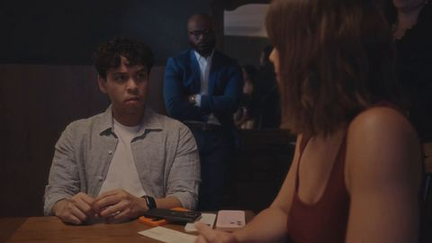
The Amount
2026 Short film 48 Hour Film Project, Los Angeles
Trailer 0:48
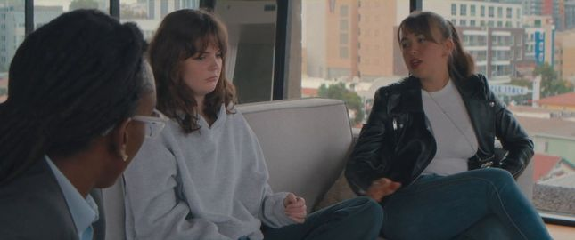
Kai
2025 Short film 48 Hour Film Project, San Diego
Best Trailer runner up, San Diego 48HFP 2025
Trailer 0:48
- San Diego 48 Hour Film Project 2025, Best of 2025 Gala, Best Trailer runner up
- San Diego 48 Hour Film Project 2025, Official Selection
In progress
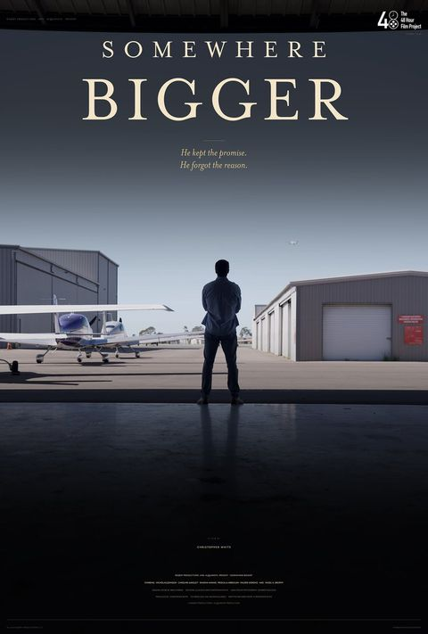
Somewhere Bigger 2026 Short film 48 Hour Film Project, Global Trailer in progress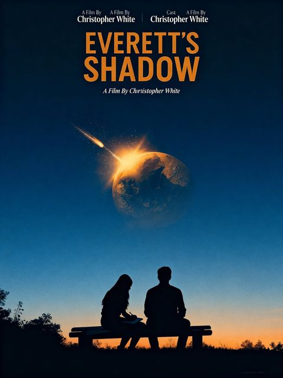
Everett's Shadow 2025 Short film 48 Hour Film Project, Los Angeles Trailer in progressPhotography
Live music, festivals, and portraiture. Exhibited at the San Diego County Fair. Open any frame for the full image.


Recreations
Film frames rebuilt from scratch: the film's frame above, mine below.
Pearl: Grand Prize, Best Costume Design, ShotDeck Recreations Contest 2024. See the winning frame on ShotDeck


Motion and editing
Brand films, performance coverage, and promotional cuts, shot and edited end to end.
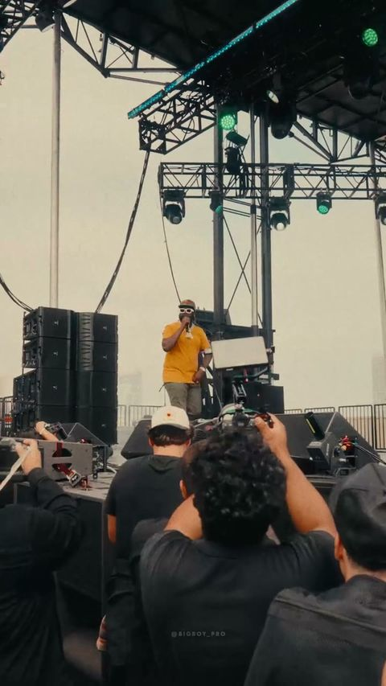
T-Pain at Wonderfront
2024 Performance edit Wonderfront Festival, San Diego
Watch 2:22
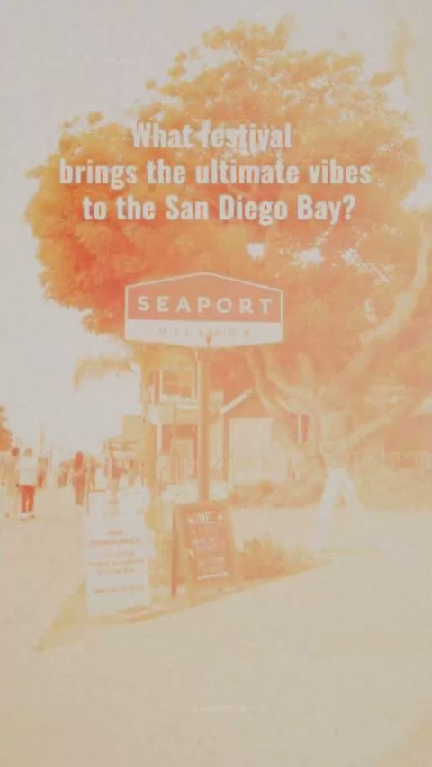
The Best Fest in the West
2024 Festival promo Wonderfront Festival
Watch 0:24
Generative video
Short films built with generative image and video tools, directed the same way as live action: story, blocking, and performance first.
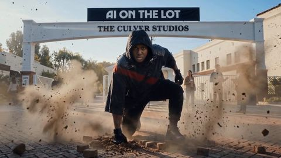
Rise Above
2026 AI on the Lot, Culver City Conference promo
Watch 0:49
A commute across Los Angeles the way it plays in your head, from a perch on the Hollywood sign to the Culver Studios gate. Stills generated and locked first, then animated, scored, and cut.
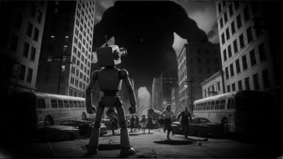
Miscast
2026 GenJam, Hollywood Through the Machine
Watch 0:40
A camera-headed robot shows up to set dressed for the dramatic lead. The movie keeps changing genre around him while he refuses to break character, until the world finally becomes the one he was right for all along.
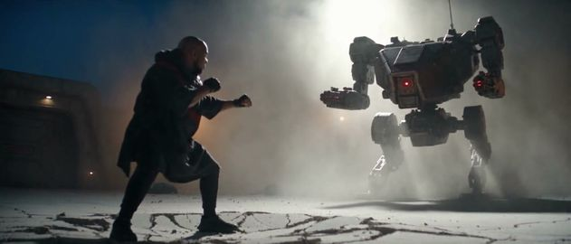
Hero
2026 Concept Built from a character sheet
Watch 0:29
A concept, and a test of whether a character designed on paper first will hold across a shot. The figure was built as a three panel sheet, front, back and face, before any frame was generated. The sheet is in Method.
The Last Light 2026 Dreamina Story Unboxed Seedance 2.5 Watch 0:15
A boy, a corn field at dusk, and a lid that should have stayed shut. Built on a fixed motion reference every entrant received, so the choreography and the cuts were set before the world was. The plan it was built from is in Method.
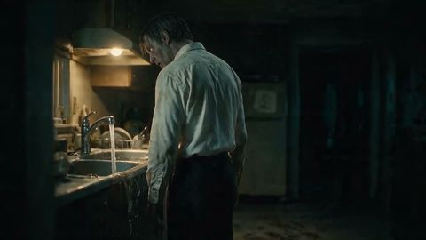
The Wrong
2026 Seedance 2.5 Horror series in progress
Watch 2 scenes
An ongoing series testing how far generative video can carry dread on its own, with no dialogue and no score to lean on. The work is in the restraint: what the camera declines to show, how long a shot is willing to hold, and whether a face reads as a person or as output. Two scenes here, more in the series.
Method
Generative work runs on a plan. These are the working sheets: character continuity, camera blocking, and a lens on every cut, settled before a frame is generated.
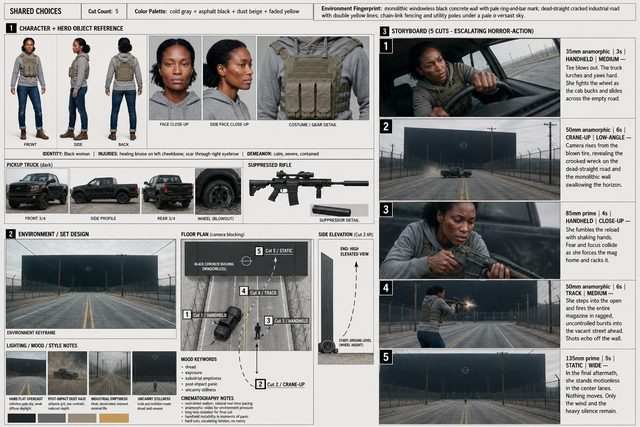
The Meridian
Director
In progress TERRORVERSE Shot plan and character continuity
Open the sheets


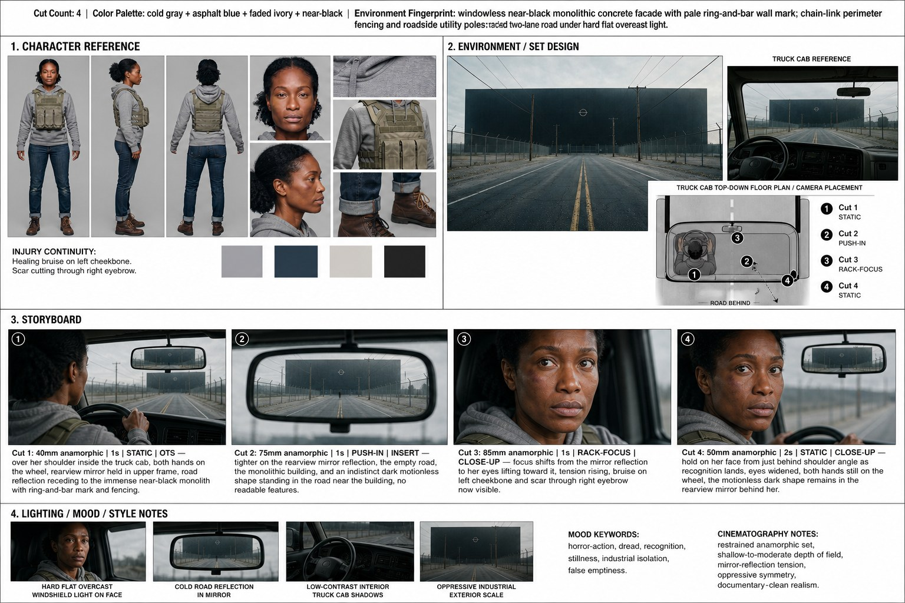
The first look at TERRORVERSE, and a test of how much can be decided before generation starts. Character continuity down to the healing bruise and the scar through the eyebrow, a fixed palette, a top down camera plan with numbered positions, and a lens, a duration and a move on every cut. The film itself is a rough draft, built to prove the workflow rather than to be delivered.
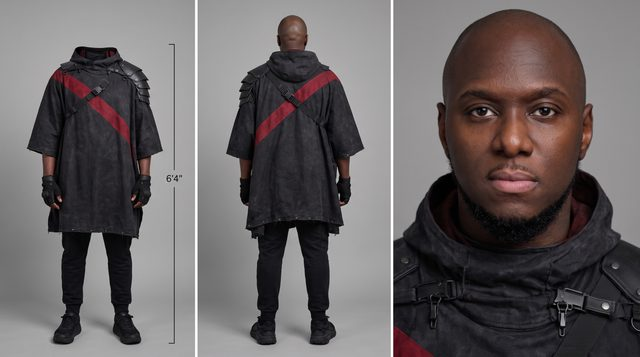
Hero
2026 Concept Character sheet
Open the sheet

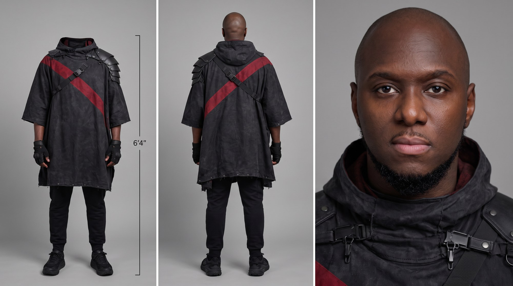
Front, back, and face, with the height marked, settled before a frame was generated. A model will invent a new person on every shot unless it is given one, so the sheet is what keeps a character the same character. The film is in Generative video.
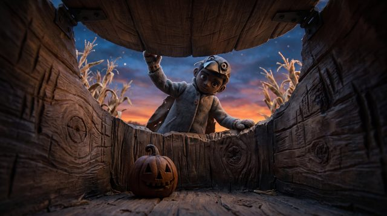
The Last Light
2026 Dreamina Story Unboxed Reference plates
Open the sheets

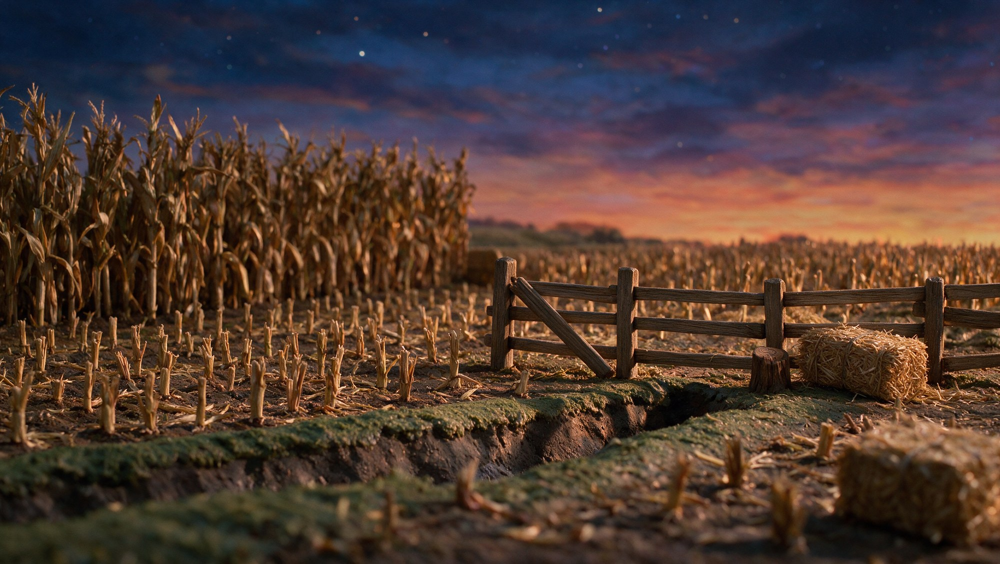

Every entrant in Dreamina's Story Unboxed contest is handed the same reference animation, so the choreography, the timing and the cuts arrive already fixed. The world, the characters and the meaning do not. These are the plates built to answer that: the look locked frame by frame before a single second of motion was generated. The craft is in what survives the constraint.
What I do
Creative production
developing stories and guiding creative work from an idea through production and finishing.
Direction
story, casting, blocking, and performance.
Camera
lighting and camera for narrative, live music, and brand work, indoors and on location.
Editing and finishing
assembly through picture lock, sound, color, titles, delivery in horizontal and vertical formats.
Photography
events, live performance, and portraiture, shot and retouched to exhibition standard.
Generative video pipeline
directing image and video models end to end: reference control, character consistency, motion, finishing.
Get in touch.
For project inquiries, collaborations, and creative roles, get in touch. Full films are shared by email.
Discuss a projectDiscuss a creative role
Credits are listed on IMDb.